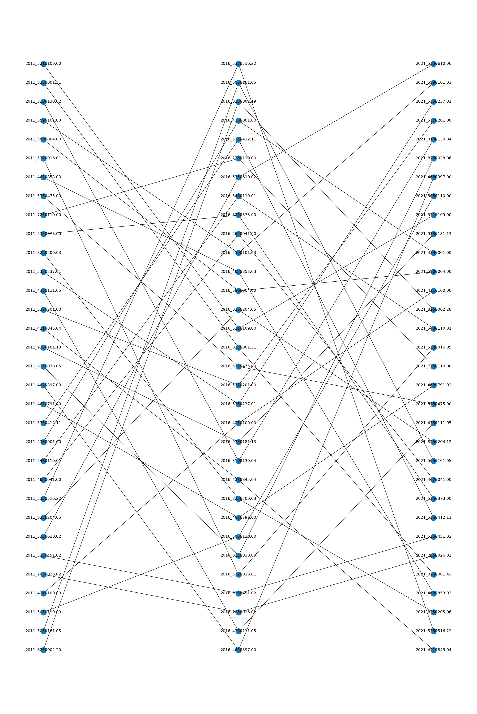

import pandas as pd
import geopandas as gpd
import networkx as nx
import numpy as np
import matplotlib.pyplot as plt
import math
import repiccard
Current Version: 0.0.1
piccard is a Python package which provides an alternative framework to traditional harmonization techniques for combining spatial data with inconsistent geographic units across multiple years. It uses a network representation containing nodes and edges to retain all information available in the data. Nodes are used to represent all the geographic areas (e.g., census tracts, dissemination areas) for each year. An edge connects two nodes when the geographic area corresponding to the tail node has at least a 5% area overlap with the geographic area corresponding to the head node in the previous available year.
The method behind this package can be found in the following research paper (link)
Dias, F., & Silver, D. (2018). Visualizing demographic evolution using geographically inconsistent census data. California Digital Library (CDL). https://doi.org/10.31235/osf.io/a3gtd
Setup
import warnings
warnings.filterwarnings('ignore')ct_2006 = gpd.read_file("data/gct_000b06a_e/gct_000b06a_e.shp")
ct_2011 = gpd.read_file("data/gct_000b11a_e/gct_000b11a_e.shp")
ct_2016 = gpd.read_file("data/lct_000b16a_e/lct_000b16a_e.shp")
ct_2021 = gpd.read_file("data/lct_000b21a_e/lct_000b21a_e.shp")Useful Functions
piccard.preprocessing
piccard.preprocessing(ct_data, year, id)Return a cleaned GeoDataFrame of the input data with a new column showing the area of each census tract.
Parameters:
ct_data : GeoDataFrame
year : string
id : string
- Input data is assumed to have been passed through
gpd.read_file() beforehanddef preprocessing(ct_data, year, id):
process_data = ct_data.copy()
#Suppressing CRS warning associated with .buffer()
with warnings.catch_warnings():
warnings.simplefilter(action='ignore', category=UserWarning)
process_data['geometry'] = (process_data.to_crs('EPSG:4246').geometry
.buffer(-0.000001))
process_data['area' + '_' + year] = process_data.area
process_data[id] = year + '_' + process_data[id]
return process_dataExample
from piccard import piccard as pc
ct_2006 = gpd.read_file("data/gct_000b06a_e/gct_000b06a_e.shp")
clean_data = pc.preprocessing(ct_2006, '2006', 'CTUID')ct_2006.head(5)| CTUID | CMAUID | PRUID | geometry | |
|---|---|---|---|---|
| 0 | 0010001.00 | 001 | 10 | POLYGON ((-52.68954 47.53004, -52.68960 47.529... |
| 1 | 0010002.00 | 001 | 10 | POLYGON ((-52.71822 47.54844, -52.71799 47.548... |
| 2 | 0010003.01 | 001 | 10 | POLYGON ((-52.74120 47.52964, -52.74126 47.529... |
| 3 | 0010003.02 | 001 | 10 | POLYGON ((-52.74526 47.52948, -52.74627 47.529... |
| 4 | 0010004.00 | 001 | 10 | POLYGON ((-52.74217 47.56288, -52.74140 47.561... |
clean_data.head(5)| CTUID | CMAUID | PRUID | geometry | area_2006 | |
|---|---|---|---|---|---|
| 0 | 2006_0010001.00 | 001 | 10 | POLYGON ((-52.68954 47.53004, -52.68961 47.529... | 0.001230 |
| 1 | 2006_0010002.00 | 001 | 10 | POLYGON ((-52.71822 47.54843, -52.71799 47.548... | 0.000234 |
| 2 | 2006_0010003.01 | 001 | 10 | POLYGON ((-52.74120 47.52965, -52.74126 47.529... | 0.000194 |
| 3 | 2006_0010003.02 | 001 | 10 | POLYGON ((-52.74527 47.52948, -52.74627 47.529... | 0.000232 |
| 4 | 2006_0010004.00 | 001 | 10 | POLYGON ((-52.74217 47.56288, -52.74141 47.561... | 0.001105 |
piccard.create_network
piccard.create_network(census_dfs, years, id, threshold=0.05)Creates a network representation of the temporal connections present in census_dfs over years when each yearly geographic area has at most threshold percentage of overlap with its corresponding area(s) in the next year.
Parameters:
census_dfs : List[GeoDataFrame]
years: List[string]
id: string
threshold: float
def create_network(census_dfs, years, id, threshold=0.05):
preprocessed_dfs = [preprocessing(census_dfs[i], years[i], id)
for i in range(len(census_dfs))]
contained_cts = ct_containment(preprocessed_dfs, years)
nodes = get_nodes(contained_cts, id, threshold)
attributes = get_attributes(nodes, census_dfs, years, id)
G = nx.from_pandas_edgelist(nodes, f'{id}_1', f'{id}_2')
nx.set_node_attributes(G, attributes.set_index(id).to_dict('index'))
return GExample
from piccard import piccard as pc
years = ['2011', '2016', '2021']
census_dfs = [ct_2011, ct_2016, ct_2021]
G = pc.create_network(census_dfs, years, 'CTUID', 0.05)list(G.nodes(data=True))[:2][('2011_0010001.00',
{'CTNAME': '0001.00',
'CMAUID': '001',
'CMANAME': "St. John's",
'CMATYPE': 'B',
'CMAPUID': '10001',
'PRUID': '10',
'PRNAME': 'Newfoundland and Labrador / Terre-Neuve-et-Labrador',
'DGUID': nan,
'LANDAREA': nan,
'network_level': 1}),
('2016_0010001.00',
{'CTNAME': '0001.00',
'CMAUID': '001',
'CMANAME': "St. John's",
'CMATYPE': 'B',
'CMAPUID': '10001',
'PRUID': '10',
'PRNAME': 'Newfoundland and Labrador / Terre-Neuve-et-Labrador',
'DGUID': nan,
'LANDAREA': nan,
'network_level': 2})]list(G.edges(data=True))[:2][('2011_0010001.00', '2016_0010001.00', {}),
('2016_0010001.00', '2021_0010001.00', {})]piccard.create_network_table
piccard.create_network_table(census_dfs, years, id, threshold=0.05)Return the final network table with all the temporal connections present in census_dfs over years when each yearly geographic area has at most threshold percentage of overlap with its corresponding area(s) in the next year.
Parameters:
census_dfs : List[DataFrame]
years: List[string]
id: string
threshold: float
- The resulting table contains the same information as the network created in
piccard.create_network()
def create_network_table(census_dfs, years, id, threshold=0.05):
num_years = len(years)
num_joins = math.ceil(num_years/2)
final_cols = ['ct_' + col_name for col_name in years]
network_table = pd.DataFrame()
drop_cols = final_cols[1:]
preprocessed_dfs = [preprocessing(census_dfs[i], years[i], id)
for i in range(len(census_dfs))]
contained_cts = ct_containment(preprocessed_dfs, years)
nodes = get_nodes(contained_cts, id, threshold)
#all_paths returns a three item tuple
all_paths = find_all_paths(nodes, num_joins, id)
all_paths_df = all_paths[0]
left_cols = all_paths[1]
right_cols = all_paths[2]
#Dividing all network paths into full paths and partial paths
na_df = all_paths_df[all_paths_df.isnull().any(axis=1)]
no_na_df = all_paths_df[~all_paths_df.isnull().any(axis=1)]
full_paths = find_full_paths(no_na_df, final_cols)
full_paths_list = full_paths.to_numpy().flatten()
partial_paths = find_partial_paths(na_df, years, left_cols, final_cols, full_paths_list)
network_table = pd.concat([full_paths, partial_paths])
network_table = network_table[final_cols]
network_table = network_table.T.drop_duplicates().T
network_table = network_table.drop_duplicates(subset=drop_cols, keep='last')
network_table.sort_values(by=final_cols[0], ignore_index=True)
attributes = get_attributes(nodes, census_dfs, years, id)
final_table = attach_attributes(network_table, attributes, years, final_cols, id)
#Formatting final table columns
for i in range(len(final_cols)):
col = str(final_cols[i])
popped = final_table.pop(col)
final_table.insert(i, popped.name, popped)
final_table.columns= final_table.columns.str.lower()
return final_tableExample
from piccard import piccard as pc
census_dfs = [ct_2011, ct_2016, ct_2021]
years = ['2011', '2016', '2021']
network_table = pc.create_network_table(census_dfs, years, 'CTUID')network_table| ct_2011 | ct_2016 | ct_2021 | ctname_2011 | cmauid_2011 | cmaname_2011 | cmatype_2011 | cmapuid_2011 | pruid_2011 | prname_2011 | ... | cmatype_2016 | cmapuid_2016 | pruid_2016 | prname_2016 | network_level_2016 | ctname_2021 | pruid_2021 | dguid_2021 | landarea_2021 | network_level_2021 | |
|---|---|---|---|---|---|---|---|---|---|---|---|---|---|---|---|---|---|---|---|---|---|
| 0 | NaN | 3050120.00 | 3050120.00 | NaN | NaN | NaN | NaN | NaN | NaN | NaN | ... | B | 13305 | 13 | New Brunswick / Nouveau-Brunswick | 2 | 0120.00 | 13 | 2021S05073050120.00 | 149.1445 | 3 |
| 1 | NaN | 3100140.00 | 3100140.00 | NaN | NaN | NaN | NaN | NaN | NaN | NaN | ... | B | 13310 | 13 | New Brunswick / Nouveau-Brunswick | 2 | 0140.00 | 13 | 2021S05073100140.00 | 144.7702 | 3 |
| 2 | NaN | 3200028.00 | 3200028.00 | NaN | NaN | NaN | NaN | NaN | NaN | NaN | ... | K | 13320 | 13 | New Brunswick / Nouveau-Brunswick | 2 | 0028.00 | 13 | 2021S05073200028.00 | 29.4354 | 3 |
| 3 | NaN | 3200029.00 | 3200029.00 | NaN | NaN | NaN | NaN | NaN | NaN | NaN | ... | K | 13320 | 13 | New Brunswick / Nouveau-Brunswick | 2 | 0029.00 | 13 | 2021S05073200029.00 | 527.2040 | 3 |
| 4 | NaN | 3200030.00 | 3200030.00 | NaN | NaN | NaN | NaN | NaN | NaN | NaN | ... | K | 13320 | 13 | New Brunswick / Nouveau-Brunswick | 2 | 0030.00 | 13 | 2021S05073200030.00 | 294.3542 | 3 |
| ... | ... | ... | ... | ... | ... | ... | ... | ... | ... | ... | ... | ... | ... | ... | ... | ... | ... | ... | ... | ... | ... |
| 6339 | 9700100.00 | 9700100.00 | 9700100.00 | 0100.00 | 970 | Prince George | K | 59970 | 59 | British Columbia / Colombie-Britannique | ... | K | 59970 | 59 | British Columbia / Colombie-Britannique | 2 | 0100.00 | 59 | 2021S05079700100.00 | 12487.2890 | 3 |
| 6340 | 9700101.00 | 9700101.00 | 9700101.00 | 0101.00 | 970 | Prince George | K | 59970 | 59 | British Columbia / Colombie-Britannique | ... | K | 59970 | 59 | British Columbia / Colombie-Britannique | 2 | 0101.00 | 59 | 2021S05079700101.00 | 667.6134 | 3 |
| 6341 | 9700102.00 | 9700102.00 | 9700102.00 | 0102.00 | 970 | Prince George | K | 59970 | 59 | British Columbia / Colombie-Britannique | ... | K | 59970 | 59 | British Columbia / Colombie-Britannique | 2 | 0102.00 | 59 | 2021S05079700102.00 | 2802.3279 | 3 |
| 6342 | 9700103.00 | 9700103.01 | 9700103.01 | 0103.00 | 970 | Prince George | K | 59970 | 59 | British Columbia / Colombie-Britannique | ... | K | 59970 | 59 | British Columbia / Colombie-Britannique | 2 | 0103.01 | 59 | 2021S05079700103.01 | 5.2340 | 3 |
| 6343 | 9700103.00 | 9700103.02 | 9700103.02 | 0103.00 | 970 | Prince George | K | 59970 | 59 | British Columbia / Colombie-Britannique | ... | K | 59970 | 59 | British Columbia / Colombie-Britannique | 2 | 0103.02 | 59 | 2021S05079700103.02 | 1371.7853 | 3 |
6344 rows × 24 columns
piccard.draw_subnetwork
piccard.draw_subnetwork(network_table, G, sample_pct=0.005)Draws a subgraph of the network representation, using a sample_pct% path sample from the network table.
Parameters:
network_table : DataFrame
G: NetworkX Graph
sample_pct: float
- The network_table is required to be generated first before using this function.
def draw_subnetwork(network_table, G, sample_pct=0.005):
#Getting sample from network_table
r = re.compile('ct_[0-9]+')
table_cols = list(network_table.columns)
sample_cols = list(filter(r.match, table_cols))
network_table = network_table[sample_cols]
sample_table = network_table.sample(frac=sample_pct)
#Adding corresponding year prefix to all nodes
for i in range(len(sample_cols)):
curr_col = sample_cols[i]
sample_table[curr_col] = sample_cols[i][3:] + '_' + sample_table[curr_col]
sample_nodes = sample_table.stack().droplevel(1).sort_values()
subgraph = G.subgraph(sample_nodes)
plt.figure(figsize=(20,30))
pos = nx.multipartite_layout(subgraph, subset_key='network_level')
nx.draw(subgraph, pos, with_labels=True)
plt.show()Example
from piccard import piccard as pc
network_table = pc.create_network_table(census_dfs, years, 'CTUID', 0.05)
G = pc.create_network(census_dfs, years, 'CTUID', 0.05)pc.draw_subnetwork(network_table, G)
Background Functions
piccard.ct_containment
piccard.preprocessing(preprocessed_dfs, years)Return a List of GeoDataFrames with census tracts that are geographically contained within census tracts from the following census year. Every ith list element (ith GeoDataFrame) includes the ith year census tracts that are contained within the i+1th year census tracts.
Parameters:
preprocessed_dfs : List[GeoDataFrame]
years : List[string]
- The order of elements in both lists in terms of the census year correspond to one other.
- Input data is preprocessed before calling this function.
def ct_containment(preprocessed_dfs, years):
num_years = len(years)
contained_tracts = []
for i in range(num_years-1):
#Getting CTs which are contained within a previous year's CT
contained_df = gpd.overlay(preprocessed_dfs[i], preprocessed_dfs[i+1],
how='intersection')
with warnings.catch_warnings():
warnings.simplefilter(action='ignore', category=UserWarning)
contained_df['area_intersection'] = contained_df.area
#Calculating the percentage of the overlapping area between the 2 years
pct_col = 'pct_' + years[i+1] + '_of_' + years[i]
contained_df[pct_col] = (contained_df['area_intersection'] /
contained_df[['area_'+years[i],
'area_'+years[i+1]]].min(axis=1))
contained_tracts.append(contained_df)
return contained_tractsExample
from piccard import piccard as pc
ct_2011 = gpd.read_file("data/gct_000b11a_e/gct_000b11a_e.shp")
ct_2016 = gpd.read_file("data/lct_000b16a_e/lct_000b16a_e.shp")
ct_2021 = gpd.read_file("data/lct_000b21a_e/lct_000b21a_e.shp")
years = ['2011', '2016', '2021']
census_dfs = [ct_2011, ct_2016, ct_2021]
preprocessed_dfs = [pc.preprocessing(census_dfs[i], years[i], 'CTUID')
for i in range(len(census_dfs))]
contained = pc.ct_containment(preprocessed_dfs, years)contained[0].head(5)| CTUID_1 | CTNAME_1 | CMAUID_1 | CMANAME_1 | CMATYPE_1 | CMAPUID_1 | PRUID_1 | PRNAME_1 | area_2011 | CTUID_2 | ... | PRUID_2 | PRNAME_2 | CMAUID_2 | CMAPUID_2 | CMANAME_2 | CMATYPE_2 | area_2016 | geometry | area_intersection | pct_2016_of_2011 | |
|---|---|---|---|---|---|---|---|---|---|---|---|---|---|---|---|---|---|---|---|---|---|
| 0 | 2011_5550021.00 | 0021.00 | 555 | London | B | 35555 | 35 | Ontario | 0.000237 | 2016_5550043.00 | ... | 35 | Ontario | 555 | 35555 | London | B | 0.000202 | POLYGON ((-81.26066 42.99321, -81.26110 42.993... | 3.981324e-09 | 0.000020 |
| 1 | 2011_5550034.00 | 0034.00 | 555 | London | B | 35555 | 35 | Ontario | 0.000148 | 2016_5550043.00 | ... | 35 | Ontario | 555 | 35555 | London | B | 0.000202 | MULTIPOLYGON (((-81.25322 42.99553, -81.25102 ... | 1.105083e-07 | 0.000748 |
| 2 | 2011_5550043.00 | 0043.00 | 555 | London | B | 35555 | 35 | Ontario | 0.000201 | 2016_5550043.00 | ... | 35 | Ontario | 555 | 35555 | London | B | 0.000202 | POLYGON ((-81.24889 42.99678, -81.24963 42.996... | 2.013663e-04 | 0.999699 |
| 3 | 2011_5550042.00 | 0042.00 | 555 | London | B | 35555 | 35 | Ontario | 0.000148 | 2016_5550043.00 | ... | 35 | Ontario | 555 | 35555 | London | B | 0.000202 | MULTIPOLYGON (((-81.24929 42.99897, -81.24965 ... | 2.051036e-08 | 0.000138 |
| 4 | 2011_5550045.00 | 0045.00 | 555 | London | B | 35555 | 35 | Ontario | 0.000200 | 2016_5550043.00 | ... | 35 | Ontario | 555 | 35555 | London | B | 0.000202 | MULTIPOLYGON (((-81.25534 43.00820, -81.25534 ... | 7.485081e-09 | 0.000037 |
5 rows × 21 columns
len(contained)2piccard.get_nodes
piccard.get_nodes(contained_tracts_df, id, threshold)Return a GeoDataFrame with the graph connections between two census tracts of different years. Each row corresponds to one edge in the final network.
Parameters:
contained_tracts_df : List[GeoDataFrame]
id: string
threshold : float
def get_nodes(contained_tracts_df, id, threshold=0.05):
nodes = gpd.GeoDataFrame()
id_cols = [f'{id}_1', f'{id}_2']
#Aggregating overlapped percentage area for all unique CTs
for i in range(len(contained_tracts_df)):
pct_col = contained_tracts_df[i].iloc[:, -1].name
year_pct = (contained_tracts_df[i]
.groupby(id_cols)
.agg({f'{pct_col}': 'sum'})
.reset_index()
)
#Selecting CTs with an overlapped area above user's threshold
connected_cts = year_pct[year_pct[pct_col] >= threshold][id_cols]
nodes = pd.concat([nodes, connected_cts], axis=0, ignore_index=True)
return nodesExample
from piccard import piccard as pc
years = ['2011', '2016', '2021']
census_dfs = [ct_2011, ct_2016, ct_2021]
preprocessed_dfs = [pc.preprocessing(census_dfs[i], years[i], 'CTUID')
for i in range(len(census_dfs))]
contained = pc.ct_containment(preprocessed_dfs, years)
nodes = pc.get_nodes(contained, 'CTUID', 0.05)nodes.head(5)| CTUID_1 | CTUID_2 | |
|---|---|---|
| 0 | 2011_0010001.00 | 2016_0010001.00 |
| 1 | 2011_0010002.00 | 2016_0010002.00 |
| 2 | 2011_0010003.01 | 2016_0010003.01 |
| 3 | 2011_0010003.02 | 2016_0010003.02 |
| 4 | 2011_0010004.00 | 2016_0010004.00 |
piccard.assign_node_level
piccard.assign_node_level(row, years, id)Assign the level of a node in the network based on its relative year in the overall network.
Parameters:
row : DataFrame row
years : List[string]
id: string
def assign_node_level(row, years, id):
for i in range(len(years)):
if row[id].startswith(str(years[i])):
return i+1piccard.get_attributes
piccard.get_attributes(nodes, census_dfs, years, id)Returns all the attributes in the original data relating to the corresponding network nodes for the given year(s)
Parameters:
nodes : DataFrame
census_dfs: List[GeoDataFrame]
years : List[string]
id: string
def get_attributes(nodes, census_dfs, years, id):
#Condensing nodes into single column df
single_nodes = pd.concat([nodes[col] for col in nodes]).reset_index(drop=True)
single_nodes_df = pd.DataFrame({id: single_nodes})
attr = []
for i in range(len(census_dfs)):
#Adding year as a prefix for the merge
curr_df_id = census_dfs[i].loc[:, id]
curr_df_id = years[i] + '_' + curr_df_id
#Removing geometry column in attributes for the final table
year_attr = census_dfs[i].loc[:, (census_dfs[i].columns != 'geometry')].copy()
year_attr[id] = curr_df_id
year_attr = pd.merge(single_nodes_df, year_attr, on=id, how='right')
attr.append(year_attr)
all_attr = (pd.concat(attr)).drop_duplicates(subset=id)
all_attr = all_attr[all_attr[id].notna()]
#Assigning each node it's level in the network (used for mainly drawing)
all_attr['network_level'] = all_attr.apply(lambda x: assign_node_level(x, years, id),
axis=1)
return all_attrExample
from piccard import piccard as pc
years = ['2011', '2016', '2021']
census_dfs = [ct_2011, ct_2016, ct_2021]
preprocessed_dfs = [pc.preprocessing(census_dfs[i], years[i], 'CTUID')
for i in range(len(census_dfs))]
contained = pc.ct_containment(preprocessed_dfs, years)
nodes = pc.get_nodes(contained, 'CTUID', 0.05)
attributes = pc.get_attributes(nodes, census_dfs, years, 'CTUID')# Note that columns will be populated based on the original input files
# i.e., The input file for 2021 doesn't have 'LANDAREA', leading to the NaN column below
attributes.head(5)| CTUID | CTNAME | CMAUID | CMANAME | CMATYPE | CMAPUID | PRUID | PRNAME | DGUID | LANDAREA | network_level | |
|---|---|---|---|---|---|---|---|---|---|---|---|
| 0 | 2011_5550021.00 | 0021.00 | 555 | London | B | 35555 | 35 | Ontario | NaN | NaN | 1 |
| 1 | 2011_5410010.00 | 0010.00 | 541 | Kitchener - Cambridge - Waterloo | B | 35541 | 35 | Ontario | NaN | NaN | 1 |
| 2 | 2011_5350091.02 | 0091.02 | 535 | Toronto | B | 35535 | 35 | Ontario | NaN | NaN | 1 |
| 3 | 2011_5800161.01 | 0161.01 | 580 | Greater Sudbury / Grand Sudbury | B | 35580 | 35 | Ontario | NaN | NaN | 1 |
| 4 | 2011_2050120.00 | 0120.00 | 205 | Halifax | B | 12205 | 12 | Nova Scotia / Nouvelle-Écosse | NaN | NaN | 1 |
piccard.find_all_paths
piccard.find_all_paths(nodes_df, num_joins, id)Return all possible paths present in the input data.
Parameters:
nodes_df : DataFrame
num_joins: int
id: string
- The resulting dataframe is not organized, and does contain duplicate entries in both the rows and columns. It is not recommended to use this function to analyze the temporal connections. It is only used as an intermediate step when creating the final network table.
- num_joins is calculated by another function when creating the final network table
def find_all_paths(nodes_df, num_joins, id):
left_cols = [f'{id}_1_x', f'{id}_2_x']
right_cols = [f'{id}_1_y', f'{id}_1_x']
#Merging network nodes num_joins amount of times to ensure all paths are found
curr_join = nodes_df.merge(nodes_df, how='left', left_on=f'{id}_1', right_on=f'{id}_2')
curr_join = curr_join.sort_values(by=[f'{id}_1_y', f'{id}_2_y'], ignore_index=True)
if num_joins > 1:
for i in range(num_joins - 1):
curr_join = curr_join.merge(curr_join, how='left',
left_on=left_cols, right_on=right_cols,
suffixes=['x', 'y'])
#Accounting for the new column names after the merge
left_cols = [col_name + 'x' for col_name in left_cols]
right_cols = [col_name + 'x' for col_name in right_cols]
return (curr_join, left_cols, right_cols)Example
from piccard import piccard as pc
years = ['2011', '2016', '2021']
census_dfs = [ct_2011, ct_2016, ct_2021]
preprocessed_dfs = [pc.preprocessing(census_dfs[i], years[i], 'CTUID')
for i in range(len(census_dfs))]
contained = pc.ct_containment(preprocessed_dfs, years)
nodes = pc.get_nodes(contained, 'CTUID', 0.05)all_paths = pc.find_all_paths(nodes, 2, 'CTUID')all_paths[0].head(5)| CTUID_1_xx | CTUID_2_xx | CTUID_1_yx | CTUID_2_yx | CTUID_1_xy | CTUID_2_xy | CTUID_1_yy | CTUID_2_yy | |
|---|---|---|---|---|---|---|---|---|
| 0 | 2016_0010001.00 | 2021_0010001.00 | 2011_0010001.00 | 2016_0010001.00 | NaN | NaN | NaN | NaN |
| 1 | 2016_0010002.00 | 2021_0010002.00 | 2011_0010002.00 | 2016_0010002.00 | NaN | NaN | NaN | NaN |
| 2 | 2016_0010003.01 | 2021_0010003.01 | 2011_0010003.01 | 2016_0010003.01 | NaN | NaN | NaN | NaN |
| 3 | 2016_0010003.02 | 2021_0010003.02 | 2011_0010003.02 | 2016_0010003.02 | NaN | NaN | NaN | NaN |
| 4 | 2016_0010004.00 | 2021_0010004.01 | 2011_0010004.00 | 2016_0010004.00 | NaN | NaN | NaN | NaN |
[all_paths[1], all_paths[2]][['CTUID_1_xx', 'CTUID_2_xx'], ['CTUID_1_yx', 'CTUID_1_xx']]piccard.find_full_paths
piccard.find_full_paths(full_paths_df, final_cols)Return all full paths present in input data.
Parameters:
full_paths_df: DataFrame
final_cols: List[string]
- A full path is defined as a path in the network where the starting node is from the first input year and the ending node is from the last input year (i.e., a path which spans the year network).
def find_full_paths(full_paths_df, final_cols):
full_paths = pd.DataFrame()
if (not full_paths_df.empty):
full_paths = full_paths_df.T.drop_duplicates().sort_values(by=0).T
full_paths.columns = final_cols
return full_pathspiccard.first_year_partial_paths
piccard.first_year_partial_paths(all_partial_paths, years, final_cols)Return all partial paths only for the first input year.
Parameters:
all_partial_paths : DataFrame
years: List[string]
final_cols: List[string]
- A partial path is defined as a path in the network where the starting and ending nodes are of any year (i.e., a path which does not span the entire network, not a full path).
def first_year_partial_paths(all_partial_paths, years, final_cols):
num_years = len(years)
drop_cols = final_cols[1:]
#Selecting paths with the starting node as the first year
mask = all_partial_paths.iloc[:, 0].str.startswith(years[0] + '_')
first_year_partials = all_partial_paths[mask]
#Calculating which year contains the ending node
max_partial_year = max(all_partial_paths.T.stack().values)[:4]
#Appending NaN columns to the end for each year as they don't exist in data
if ((max_partial_year >= years[1]) & (max_partial_year != years[-1])):
for i in reversed(range((num_years - 1) - max_partial_year)):
last_col = len(first_year_partials.columns)
first_year_partials.insert(last_col, final_cols[-i], np.NaN)
first_year_partials.columns = final_cols
first_year_partials = first_year_partials.T.drop_duplicates().dropna().T
first_year_partials.columns = final_cols
return first_year_partialspiccard.unique_partial_paths
piccard.unique_partial_paths(all_partial_paths, years, left_cols, final_cols)Return all unique partial paths between two consecutive input years.
Parameters:
all_partial_paths : DataFrame
years: List[string]
left_cols: List[string]
final_cols: List[string]
- A partial path is defined as a path in the network where the starting and ending nodes are of any year (i.e., a path which does not span the entire network, not a full path).
def unique_partial_paths(all_partial_paths, years, left_cols, final_cols):
num_years = len(years)
unique_partials = pd.DataFrame()
for i in range(1, num_years):
curr_year = years[i] + '_'
prev_year = years[i-1] + '_'
curr_year_mask = all_partial_paths.iloc[:, 0].str.startswith(curr_year)
prev_year_mask = all_partial_paths.iloc[:, 0].str.startswith(prev_year)
curr_year_partials = all_partial_paths[curr_year_mask]
prev_year_partials = all_partial_paths[prev_year_mask]
curr_year_mask = ~curr_year_partials[left_cols[0]].isin(prev_year_partials)
curr_year_unique = curr_year_partials[curr_year_mask]
curr_year_unique = curr_year_partials.dropna(axis=1).T.drop_duplicates().T
#Appending NaN column to the front to account for missing first year
for k in range(i):
curr_year_unique.insert(0, final_cols[k], np.NaN)
#Appending NaN column to the end to account for missing last year
if(not curr_year_unique.empty):
curr_year_val = max(curr_year_unique.T.stack().values)[:4]
curr_year_index = years.index(curr_year_val)
if (curr_year_index != years[-1]):
for j in range((num_years - 1) - curr_year_index):
last_col = len(curr_year_unique.columns)
curr_year_unique.insert(last_col, final_cols[-j], np.NaN)
curr_year_unique.columns = final_cols
unique_partials = pd.concat([unique_partials, curr_year_unique])
return unique_partialspiccard.find_partial_paths
piccard.find_partial_paths(partial_paths_df, years, left_cols, final_cols, exclude_nodes)Return all partial paths present in input data.
Parameters:
partial_paths_df : DataFrame
years: List[string]
left_cols: List[string]
final_cols: List[string]
exclude_nodes: DataFrame
- A partial path is defined as a path in the network where the starting and ending nodes are of any year (i.e., a path which does not span the entire network, not a full path).
def find_partial_paths(partial_paths_df, years, left_cols, final_cols, exclude_nodes):
all_partial_paths = partial_paths_df.T.drop_duplicates().T
all_partial_paths = all_partial_paths[~all_partial_paths[left_cols[0]].isin(exclude_nodes)]
first_year_partials = first_year_partial_paths(all_partial_paths, years, final_cols)
unique_partials = unique_partial_paths(all_partial_paths, years, left_cols, final_cols)
all_partials = pd.concat([unique_partials, first_year_partials])
return all_partialspiccard.attach_attributes
piccard.attach_attributes(network_table, attributes, years, final_cols, id)Return network table with attached attributes corresponding to the nodes involved.
Parameters:
network_table : DataFrame
attributes: DataFrame
years: List[string]
final_cols: List[string]
id: string
def attach_attributes(network_table, attributes, years, final_cols, id):
years_df_list = []
for i in range(len(final_cols)):
col = str(final_cols[i])
#Getting attributes for each year
table_col = network_table[col].to_frame().astype(object)
curr_year = table_col.merge(attributes, how='left', left_on=col, right_on=id)
curr_year = curr_year.drop([id], axis=1)
#Suppressing warning for str.replace
with warnings.catch_warnings():
warnings.simplefilter(action='ignore', category=FutureWarning)
curr_year = curr_year.apply(lambda x: x.str.replace(r'[0-9]+_', '')
if x.dtypes==object else x).reset_index(drop=True)
#Formatting all columns as 'colname_year'
curr_year_cols = [f'{col}_{years[i]}'
if col != final_cols[i] and col != f'area_{years[i]}'
else col for col in curr_year.columns]
curr_year.columns = curr_year_cols
years_df_list.append(curr_year)
#Combining all years dfs into one
network_table = (pd.concat(years_df_list, axis=1)).dropna(how='all', axis=1)
return network_table